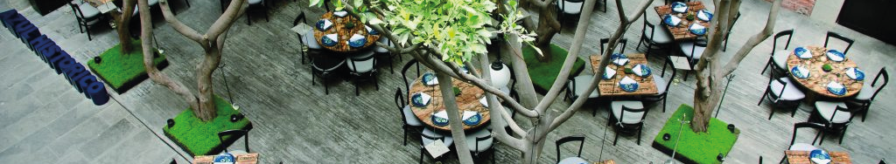
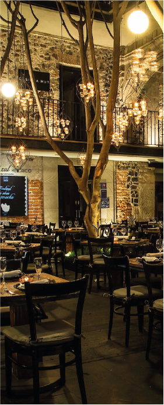

AZUL HISTÓRICO

Azul Histórico es un restaurante muy reconocido en el Centro Histórico de la Ciudad de México. Es famoso por su propuesta de cocina mexicana tradicional reinterpretada y por su ambiente dentro de un edificio histórico.
Está dirigido por la chef Ricardo Muñoz Zurita, conocido por investigar y rescatar recetas tradicionales mexicanas.
El restaurante se encuentra dentro del antiguo Palacio de los Condes de Miravalle, un edificio colonial del siglo XVII. Este tipo de construcciones eran residencias de familias nobles durante la Nueva España, por lo que el lugar tiene un pasado ligado a la aristocracia colonial.
Con el paso del tiempo dejó de ser residencia privada, tuvo distintos usos comerciales Fue restaurado como parte de la recuperación del Centro Histórico
Arquitectura y ambiente
Patio central típico colonial Árboles altos dentro del patio
Muros de piedra y arcos
Iluminación cálida y ambiente elegante
